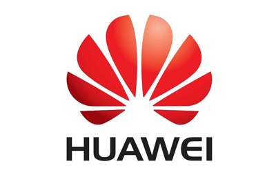
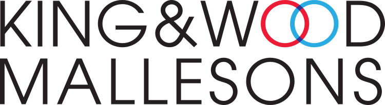
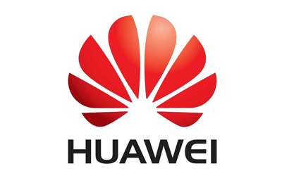
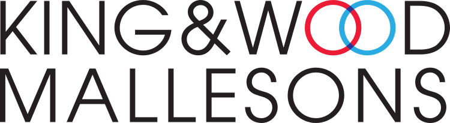
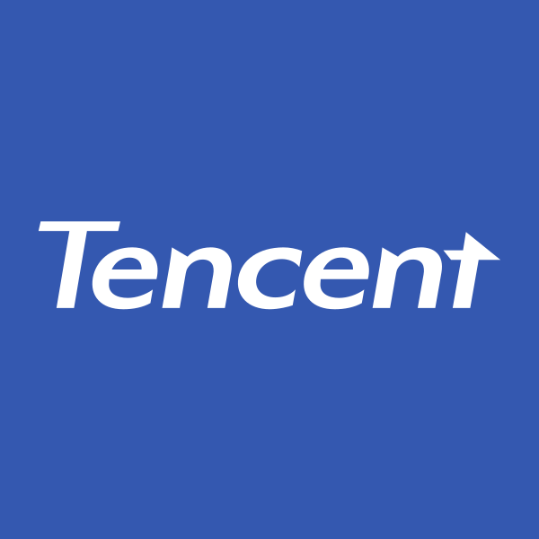
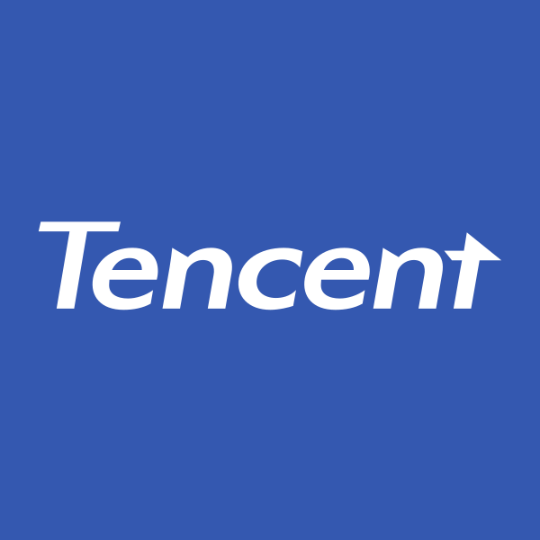

2019
Began as a small initiative to address the growing need for data literacy and cybersecurity in the nonprofit sector. During the COVID-19 pandemic, we gained valuable experience by helping NGOs adapt to the challenges of remote operations and increased digital reliance.
2022
We collaborated with leading firms like PwC and KPMG to support NGOs in assessing and fostering Hong Kong's post-pandemic economic recovery. This partnership allowed us to establish a reputation for delivering impactful, data-driven insights. By 2024, we expanded our services to include online courses, equipping NGOs with the tools to navigate cybersecurity threats and comply with privacy laws globally.
2024
Expanded to offer one-on-one consultations and launch our first online course serie.

 



 
